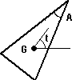

Prisme réfractant

Définition
Il est défini par son centre d'inertie G, l'angle au sommet, la
hauteur, la direction de cette hauteur principale, et par les indices
de réfraction.
Le prisme peut être ajouté:
- en cliquant sur le bouton de la barre d'outil ayant la forme
ci-dessus, puis en faisant un clic simple pour saisir le centre
d'iinertie, puis un clic simple pour saisir le sommet principal
(ne pas maintenir le bouton de la souris appuyé entre deux points),
puis un dernier clic qui fixe l'angle au sommet (en fixant un des 2
derniers sommets).
OU
- menu "Ajouter" puis "Système optique réel" puis
"Prisme".
Déplacement
On peut déplacer:
- le sommet principal: le prisme tourne alors de son centre d'inertie G, sa forme est inchangée
- le centre d'inertie: translation du prisme
- les 2 autres sommets: avec l'un on modifie uniquement l'angle au sommet, avec l'autre on modifie uniquement la hauteur.
Options
On peut imposer
- la couleur à l'écran du prisme
- les indices de réfraction dans le bleu, le vert et le
rouge; par défaut, les valeurs 1,8, 1,6 et 1,4 sont attribuées.
On peut aussi choisir directement un matériau dans une liste qui comprend
quelques verres, l'eau, et des plastiques optiques. Plus précisément,
les indices sont donnés pour les longueurs d'onde de référence
suivantes: 486,1nm, 587,6nm et 656,3nm. Pour modifier la liste des éléments
proposés, cliquer ici.
- les conditions d'existence d'un rayon réfléchi, dans
le sens entrant et dans le sens sortant; le rayon réfléchi
peut exister "toujours", "jamais", "seulement si le réfracté
existe", "seulement si le réfracté n'existe pas". Lorsqu'il
y a à la fois un rayon transmis et un rayon réfléchi,
le rayon réfléchi est un "rayon enfant", terminologie utilisée
dans la définition du rayon unique, de la
source ponctuelle, et de l'onde
plane.
Ces propriétés peuvent être rendues accessibles:
- à la construction de la sphère si on passe par
le menu "Ajouter"
- à tout instant en cliquant sur le bouton "Propriétés"
de la barre d'outil, puis en cliquant sur un des cercles bleus qui apparaissent
sur l'élément dont on veut obtenir les propriétés;
ne pas oublier à la fin de cliquer sur le bouton "Fin prop." de
la barre d'outil pour quitter le mode propriétés.
Divers
On peut demander que la normale soit tracée à
chaque point d'intersection d'un rayon lumineux avec ce prisme:
- menu "Options", vérifier que "Afficher les normales" est
coché
OU
- dans la barre d'outil, boite à cocher "Normales"
On peut aussi demander que les angles d'incidence et de réfraction
soient affichés (en °):
- menu "Options", vérifier que "Afficher les angles" est coché
OU
- dans la barre d'outil, boite à cocher "Angles d'incidence
et de réfraction"
L'angle de réflexion n'est pas affiché, afin de ne
pas surcharger les représentations.
Le nombre de décimales sur les angles est fixé
dans la boite de dialogue des options des normales: menu "Options" puis
"Options des normales"
Retour à la page
d'accueil